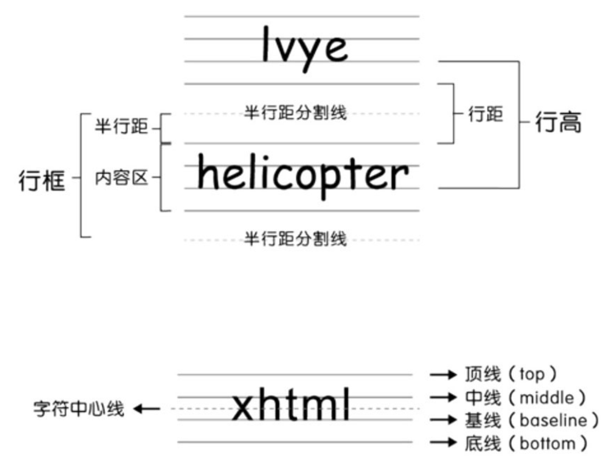
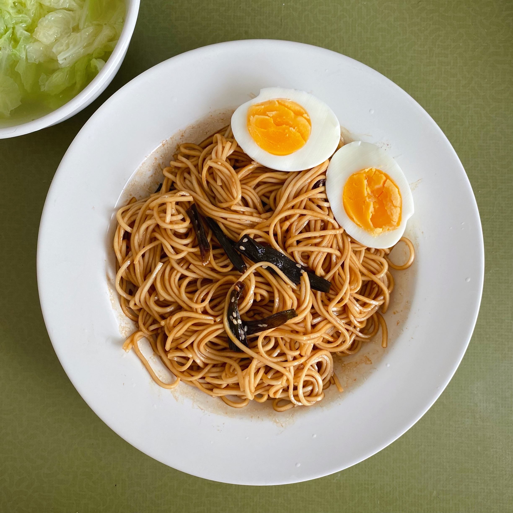
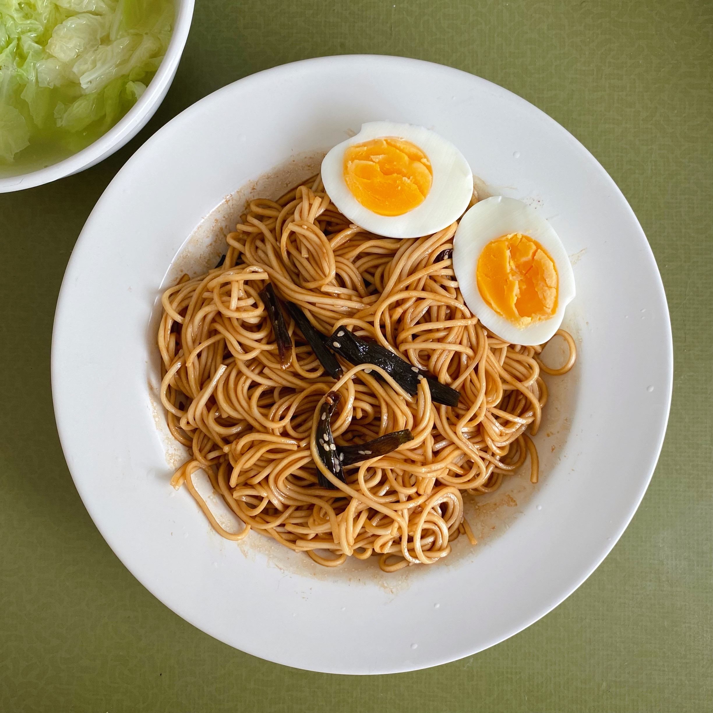
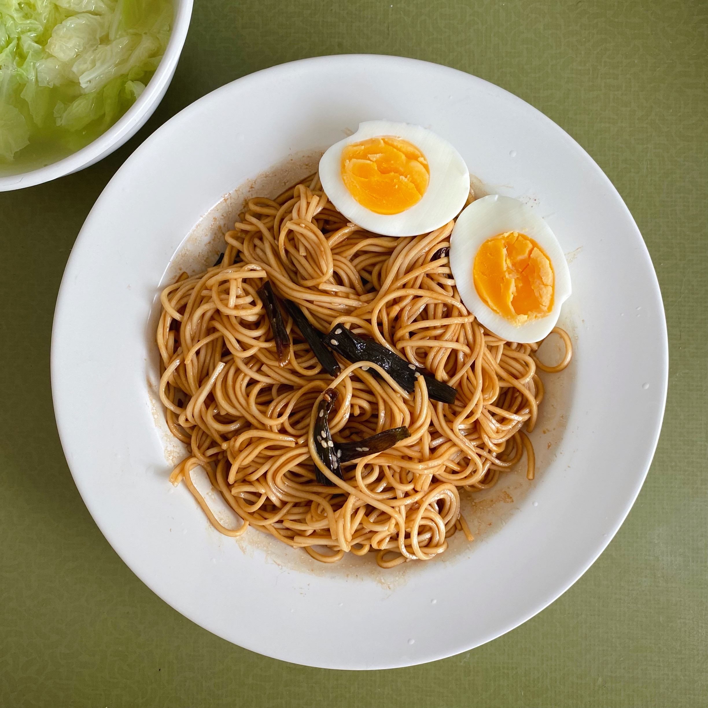

CSS引入方式
外部样式表
在head中使用link标签来引用
<link rel="stylesheet" type="text/css" href="文件路径" />
rel: relative的缩写, 取值固定即stylesheet, 表示引入的是一个样式表文件, 即CSS文件.
type属性取值也是固定的, 即"text/css", 表示这是标准的CSS.
内部样式表
CSS代码放在style标签内, style标签是放在head标签内部. type="text/css"是必须添加的, 表示这是标准的CSS.
<style>
div{color: red;}
</style>
行内样式表
内部样式表的CSS是在"style标签"内定义的, 而行内样式表的CSS是在"标签的style属性"中定义的. 每一个元素内部定义, 可读性和维护性很差.
@import导入样式表
实际开发中极少使用, 更倾向于link方式. @import先加载HTML后加载CSS, 页面用户体验非常差. link先加载CSS再加载HTML.
CSS选择器
id属性: 唯一性
class属性
类: 为同一个页面的相同元素或者不同元素设置相同的class, 然后使得具有相同class的元素具有相同的CSS样式.
CSS选择器
- 元素选择器
div{color:red;}
- id选择器: id名前必须加前缀#, #表这是一个id选择器
#name{color:red;}
- class选择器: class名前必须加前缀., .表这是一个class选择器
.gender{color:red;}
- 后代选择器: 选择元素内部中所有的某一种元素, 包括子元素和其他后代元素(如孙元素). 选中孙元素(中间不用再写父元素, 直接写孙元素), 父元素不会一起被选中. 父元素和后代元素必须要用空格隔开,
从而表示选中某个元素内部的后代元素.
#father1 div{color:red;}
#father2 span{color:blue;}
- 群组选择器: 指的是同时对几个选择器进行相同的操作. 两个选择器之间必须要用,隔开.
#name,.gender,span{color:blue;}
层次选择器(后代选择器的扩展)
- M N 后代选择器: 选择M元素内部后代N元素, 即所有N元素.
- M>N 子代选择器: 选择M元素内部子代N元素, 即第一级N元素, 只限子元素.
- M~N 兄弟选择器: 选择M元素后所有同级N元素. 兄弟选择器只选取后面的所有兄弟元素, 不包括前面的所有兄弟元素.
- M+N 相邻选择器: 选择M元素相邻的下一个元素, M N是同级元素.
注意: 兄弟选择器选取元素后面"所有"的某一类元素, 相邻选择器选取元素后面"相邻"的某一个元素.
技巧: 使用相邻选择器, 可在两个元素之间实现一些效果(border, margin等)
关于我们联系我们版权声明免责声明广告服务意见反馈
字体样式
- font-family
多种字体用逗号隔开, 从左往右.
如果字体类型只有一个英文单词, 则不需要加上双引号; 如果字体类型是多个英文单词或者是中文, 则需要加上双引号.
- font-size
一般用px像素值, 不用关键字.
- font-weight
100~900的9个数值或4个关键字.
- normal = 400
- lighter = 100
- bold = 700
- bolder = 900
- font-style
- normal
- italic 斜体
- oblique 斜体(没有italic属性的字体用oblique实现斜体效果)
- color
关键字或16进制RGB值.
#000000是黑色, #FFFFFF是白色
CSS注释: /*注释的内容*/
文本样式
字体样式注重个体(文字本身), 文本样式注重整体(整个段落)
- text-indent
首行缩进text-indent:2em;，p首行不会自动缩进. 初级可使用px像素值. 中文段落缩进两个字符, text-indent就是font-size的两倍.
常用属性left/center/right，控制文本和图片对齐方式。justify（两端对齐）本身会产生一些问题，开发中比较少用。
text-align对文字、inline元素（行内元素）以及inline-block元素（行内块元素）起作用，但对块元素不起作用。其中，img元素属于inline-block元素。
水平居中“text-align:center；”与“margin:0 auto；”的区别：
- “text-align:center；”实现的是文字、inline元素以及inline-block元素的水平居中。
- “margin:0 auto；”实现的是块元素的水平居中。
- “text-align:center；”在父元素中定义，“margin:0 auto；”在当前元素中定义。
- text-align
水平对齐:
text-align不仅对文本有效, 对图片(img元素)也有效.
- text-decoration
文本修饰:
- none 默认值, 去除所有划线效果
- underline 下划线
- line-through 中划线
- overline 顶划线
去除超链接a元素的下划线: text-decoration:none;
- text-transform
大小写:
- none 默认值, 无转化
- uppercase 转换为大写
- lowercase 转换为小写
- capitalize 只将每个英文单词首字母转换为大写
- line-height
行高: 像素值
line-height属性设置行间的距离（行高），不能使用负值。该属性会影响行框的布局。在应用到一个块级元素时，它定义了该元素中基线之间的最小距离而不是最大距离。
line-height 与 font-size 的计算值之差(行距)分为两半，分别加到一个文本行内容的顶部和底部。可以包含这些内容的最小框就是行框（line box）。
值得注意的是：一个行内元素如span不是被其中的文字撑开的，而是由其中的line-height撑开的。
应用：
- 对于ｐ等，设置height和line-height相等，这样文字就居中了 。
- 对于div中的img，可以给div设置height和line-height相等，然后给img设置vertical-align:middle;即可实现。

line-height取值：
-
height, line-height
line-height有默认值，当没有定义line-height属性时，浏览器就会采用默认的line-height值。
一行文字的高度是由line-height决定，而不是由height决定的。例如在p标签中，一个p标签的文字可以有很多行，其中line-height定义的是一行文字的高度，而height定义的是整个段落的高度（p标签的高度）。
定义height和line-height这两个属性值相等，实现单行文字的垂直居中。
height 50px, line-height 20px
height 50px, line-height 40px
height 50px, line-height 60px
-
line-height取值为百分比值、em值
当前元素的行高相对于父元素的font-size值来计算：
行高 = 父元素font-size x 百分比
行高 = 父元素font-size x em值
由于line-height具有继承性，当父元素line-height取值为百分比时，子元素会直接继承父元素的line-height（除非自己指定line-height）。
line-height: 2em 和 line-height: 200% 都表示行高为字体尺寸的二倍。
-
line-height取值为无单位数字
当line-height值为无单位数字时，实际的行高是相对于当前元素的font-size值来计算的。
行高 = 父元素font-size x 无单位数字
子元素继承的是父元素的系数，不会直接继承父元素的line-height。
- letter-spacing/ word-spacing
字间距(英文字母, 中文字)/词间距(只针对英文单词): 像素值
text-indent: -9999px;
一般用于logo，h1在搜索引擎优化中很重要，所以把logo图片放在h1标签中。
指定h1元素的长宽与LOGO图片的长宽一样，然后定义h1的背景图片（background-image）为LOGO图片。使用logo图片作为h1标签的背景图片，然后使用“text-indent:-9999px；”来隐藏h1的文字内容。
CasualXO
CasualXO
注意：隐藏文字可以使用display:none；，但搜索引擎一般都把这些文字当做垃圾信息而忽略，此时h1的权重会丢失。
一般电脑屏幕宽度有为1024px、1366px等，定义为-9999px，是为了让文字的缩进足够大，大分辨率电脑下也看不到文字。
line
边框样式
不管是整体样式, 还是局部样式, 必须要同时设置border-width、border-style、border color这三个属性才会有效果.
整体样式
- border-width
边框宽度: px
- border-style
边框外观:
- none 无样式
- dashed 虚线
- solid 实线
- border-color
边框颜色: 取关键字或16进制RGB值
简写形式: border: 1px solid red;
等价于: border-width:1px;border-style:solid;border-color:red;
局部样式
- border-top
- border-bottom
- border-left
- border-right
去除单条边框: 宽度设为0px, 如border-bottom:0px, 不用写外观和颜色.
border-bottom:0px; = border-bottom:0; = border-bottom:none;
列表样式
list-style-type 列表项符号
list-style-type属性是针对ol或者ul元素的, 而不是li元素.
有序列表取值:
- decimal 默认值1 2 3
- lower-roman 小写罗马数字i ii iii
- upper-roman 大写罗马数字I II III
- lower-alpha 小写英文字母a b c
- upper-alpha 小写英文字母A B C
无序列表取值:
- disc 默认值 实心圆
- circle 空心圆
- square 正方形
去除列表项符号: list-style-type:none;
比如, 去除整个页面有序和无序列表项符号: ol,ul{list-style-type:none;}
list-style-image 列表项图片
list-style-image: url; 自定义列表项符号, 用图片替代列表项符号(不需要先去除列表项符号, 可直接替代).
表格样式
caption-side:top(默认)/bottom 表格标题位置
如果想要定义表格标题的位置, 在table或caption这两个元素的CSS中定义caption-side属性, 效果是一样的. 不过一般情况下我们都只在table元素中定义就可以了.
border-collapse 表格边框合并, 在table元素中定义
- separate 默认, 边框分开有空隙
- collapse 边框合并无空隙
border-spacing:px; 表格边框间距, 在table元素中定义
注意: 表格的样式要应用到特定的标签上, 比如table/th/td/tf
图片样式
图片大小
img {
width: px;
height: px;
}
注意: 需要多大图, 就制作多大图. 不建议使用大图片, 再用width和height改变大小.
图片边框 border: 1px solid red;
图片对齐 text-align: left(默认)/center/right
text-align属性一般只用于两个地方: 文本水平对齐和图片水平对齐.
注意: 水平对齐不是在img元素定义, 而是在其父元素中定义.
图片垂直对齐 vertical-align
- top 顶部对齐
- middle 中线对齐
- baseline 基线对齐
- bottom 底线对齐
注意: vertical-align属性定义周围的行内元素或文本相对于该元素的垂直方式, 所以要在img元素上定义
float: left/right; 文字环绕
背景样式
- 背景颜色
- 背景图片
背景图片样式属性
- background-image 定义背景图片地址
- background-repeat 定义背景图片重复, 如横向/纵向重复
- background-position 定义背景图片位置
- background-attachment 定义背景图片固定
background-color:关键字/RGB; 背景颜色
注意: color属性用于定义"文本颜色", 而background-color属性用于定义"背景颜色"
background-image:url(图片路径); 背景图片样式, 还要设置div的宽高
背景图片跟图片是不一样的, 背景图片是使用CSS来实现, 而图片是使用HTML来实现.
background-repeat 背景图片重复
- repeat 默认, 在水平方向和垂直方向上同时平铺
- repeat-x 只在水平方向(x轴)上平铺
- repeat-y 只在垂直方向(y轴)上平铺<< /li>
- no-repeat 不平铺
background-position 背景图片位置
- 像素值
同时设置水平方向和垂直方向, 如background-position:12px 24px;, 相对于左上角, 图片水平左间距12px, 垂直上方间距24px.
- 关键字
同时设置水平方向(left, center, right)和垂直方向(top, center, bottom).
在实际开发中, background-position一般用于实现CSS Spirit(精灵图片).
background-attachment 背景图片固定
- scroll 默认, 水元素一起滚动
- fixed 固定不动
背景图铺满整个页面
<style type="text/css">
*{
margin: 0;
padding: 0;
}
body {
width: 100%;
height: 100%;
background-image: url(../cat.jpeg);
}
</style>
若加上background-size: 100%;, 这张图就会撑满整个页面, 不会平铺.
超链接样式
超链接伪类
定义超链接在鼠标点击的不同时期的样式.
a:hover {...} 鼠标经过状态(主要使用).
对于未访问时状态, 直接针对a元素定义a {...} 就行了, 没必要使用a:link.
注意: :hover伪类可以定义任何一个元素在鼠标经过时的样式, 如div, img.
cursor 鼠标样式
常用属性值以下3个:
如: #div_pointer {cursor: pointer;}
自定义鼠标样式: cursor: url(图片地址), 属性值;
鼠标图片后缀名一般都是.cur, "属性值"一般为default、pointer、text这三种.
盒子模型
所有的元素都可以视为一个盒子
- content 内容
属性: width/height/overflow
width和height这两个属性是针对内容区content而言的, 并不包括padding部分.
当内容过多超出width和height时, 可以使用overflow属性来指定溢出处理方法.
- padding 内边距, 内容到边框之间的距离
属性: padding-top、padding-bottom、padding-left、padding-right以及综合了以上四个方向的简写内边距属性padding.
可用padding实现一个元素内部居中
简写:
- padding: 20px; 四个方向20px
- padding: 20px 40px; 上下20px, 左右40px
- padding: 20px 40px 60px 80px; 上右下左, 顺时针
- margin 外边距, 当前元素和其他元素之间的距离
两个盒子之间的距离.
属性: margin-top、margin-bottom、margin-left、margin-right以及综合了以上四个方向的简写外边距属性margin.
margin: 0 auto可实现左右居中
负margin技术: 外边距为负值, 盒子重叠效果. margin值可以取负, padding不行
简写:
- padding: 20px; 四个方向20px
- padding: 20px 40px; 上下20px, 左右40px
- padding: 20px 40px 60px 80px; 上右下左, 顺时针
- border 边框
属性: border-width、border-style、border-color以及综合了三类属性的简写边框属性border.
简写: border:1px solid gray;
border:0, border定义为0px, 浏览器会对border渲染, 占用内存.
border:none, 浏览器解析时不会作出渲染, 不占用内存.
width/height
元素的宽度(width)和高度(height)针对内容, 不包括padding.
只有块元素可以设置width和height, 行内元素无法设置width和height(这里不考虑inline-block元素). 如div和span.
没有给块元素设置width, 块元素就会延伸到整行.
overflow: 当内容信息太多而超出内容区所占范围时, 可以使用overflow溢出属性来指定处理方法.
外边距叠加: 当两个垂直外边距相遇时, 这两个外边距将会合并为一个外边距, 等于发生叠加之前的两个外边距中的最大值.
- 同级元素
当一个元素出现在另外一个元素上面的时候, 第一个元素的下边距margin-bottom将会与第二个元素的上边距margin-top会发生合并.
- 父级元素
一个元素包含另一个元素, 假如没有内边距padding或边框border把外边距分隔开的话, 父元素和子元素的相邻上下外边距也会发生合并. 左右边距不会合并.
- 空元素
空元素指没有子元素或者没有文字内容的元素, 例如<br/>/<hr/>等.
当一个空元素有上下外边距时, 如果没有border或者padding, 则元素的上外边距与下外边距会发生合并.
如果空元素的外边距碰到另外一个元素的外边距, 它们也会发生合并.
注意:
- 水平外边距不会叠加.
- 垂直外边距只要在以上三种情况下叠加.
- 外边距叠加之后的外边距高度等于发生叠加之前的两个外边距中的最大值.
- 外边距叠加针对的是block以及inline-块元素, 不包括inline元素. 因为inline元素的margin-top和margin-bottom设置无效.
- 最好统一使用margin-top或margin-bottom, 不要混合使用, 从而降低出现问题的风险.
- 外边距叠加的原理比较复杂, 跟BFC(块级格式上下文)有着密切的关系.
负margin
对普通文档流元素的影响:
- margin-top或者margin-left为负数时, "当前元素"会被拉向指定方向, 覆盖"其他元素".
- margin-bottom或者margin-right为负数时, "后续元素"会被拉向指定方向, 覆盖"当前元素".
对浮动元素的影响类似, 浮动元素可以向左也可以向右, 使用负margin时要关注浮动元素的流动方向.
此处父元素font-size: 0;可以去除inline元素或inline-block元素之间的间距, 比如span或div变为inline-block后之间的空隙.
负margin技巧
- 图片与文字对齐
图片与文字默认是基线对齐(vertical-align:baseline).
实现图片与文字底部水平方向对齐, 除了vertical-align:text-bottom, 还可以使用兼容性比较好的负margin来实现.
img{margin:0 3px -3px 0; }
Google
- 自适应两列布局
左右两列, 一列宽度为自适应, 另一列宽度固定.
float一般只能实现固定的左右两列布局, 不能其中一列自适应.
- 元素垂直居中: position结合负margin实现
position这种方法万能，不仅可用于block，也可以用于inline元素和inline-块元素
通过top、left 50%把子div挤到中心右下角，再通过负margin一半把它拉回到中心。
父元素{
position: relative;
}
子元素{
position: absolute;
top: 50%;
left: 50%;
margin-top: height值一半的负值;
margin-left: width值一半的负值;
}
- tab选项卡：关键是使用“margin-top:-1px”来解决选项卡下边框显示问题。
overflow
使用overflow属性来定义当内容溢出元素边框时发生的事情：
- visible：默认，溢出内容可见
- hidden：溢出内容隐藏，以免影响布局
- scroll：有溢出，显示滚动条
- auto：跟scroll相似，但auto值在盒子需要的时候给它一个滚动条
overflow hidden清除浮动引起的塌陷
也可以添加一个空div为下方清除浮动clear: both;
浮动布局
normal flow 普通文档流/普通流
脱离文档流: 浮动/定位
浮动 float: left/right/none;
浮动最常用于实现水平方向上的并排布局，例如两列布局、多列布局。浮动一般用于实现水平方向的布局，而不是垂直方向上的布局。
-
当一个元素定义了“float:left”或“float:right”时，不管这个元素之前是inline、inline-block或者其他类型，都会变成block类型。
可以定义width、height、padding和margin。
可以使用margin-left或margin-right来定义浮动元素与其他元素之间的间距。
-
当一个元素定义了“float:left”或“float:right”时，这个元素会脱离文档流，后面的元素会紧跟着填上空缺的位置。
绵胖瓜是世界上最好的胖瓜。绵胖胖是一只可爱的小猫咪，每天喵咪猫咪猫咪，睡觉会打呼，撒娇会哼唧。绵胖瓜是世界上最好的胖瓜。绵胖胖是一只可爱的小猫咪，每天喵咪猫咪猫咪，睡觉会打呼，撒娇会哼唧。绵胖瓜是世界上最好的胖瓜。绵胖胖是一只可爱的小猫咪，每天喵咪猫咪猫咪，睡觉会打呼，撒娇会哼唧。青青河边草，绵绵思远道。
clear: left/right/both; 清除浮动
我们一般都是在浮动元素后面再增加一个空元素, 然后为这个空元素定义clear:both;来清除浮动. 在实际开发中,使用浮动之后如果发现有什么不对劲的地方, 首先检查有没有清除浮动.
注意: float布局产生的margin有的折叠有的相加的问题, 涉及BFC概论, 避免使用float, 可使用flex布局.
- clear: both
clear属性不是应用于浮动元素本身，而是应用于浮动元素后面的元素。
缺点：增加多余div，破坏html代码语义。
- overflow: hidden
“overflow:hidden”应用于浮动元素的父元素，而不是当前的浮动元素。
注意：“overflow:hidden”会使得超出父元素部分隐藏。
- ::after 伪元素
::after伪元素结合“clear:both”来清除浮动的方式，定义成公共类（如类名为clearfix），全局引用，减少CSS代码。
.clearfix {
*zoom:1;
}
.clearfix::after {
clear: both;
content: "";
display: block;
height: 0;
visibility: hidden;
}
“*zoom:1；”用于解决IE6、IE7浮动问题。
多个div并排居中显示
<div class="div0">
<div class="div1">1</div>
<div class="div2">2</div>
</div>
- 使用flex
.div0 {
display: flex;
justify-content: center;
}
- 使用inline-block
.div0 {
text-align: center;
}
.div1, .div2 {
display: inline-block;
}
浮动的影响
定位布局
- fixed 固定定位
被固定的元素不会随着滚动条的拖动而改变位置, 如返回首页button.
通过position属性来实现, top、bottom、left和right这四个属性不一定全部都用到, 一般只会用到其中两个.
注意, 这四个值的参考对象是浏览器的四条边.
position: fixed;
top: px;
bottom: px;
left: px;
right: px;
- relative 相对定位
该元素的位置是相对于它的原始位置计算而来.
通过position属性来实现, top、bottom、left和right这四个属性不一定全部都用到, 一般只会用到其中两个.
这四个值的参考对象是该元素的原始位置.
- absolute 绝对定位
一个元素变成了绝对定位元素, 这个元素就完全脱离文档流了, 绝对定位元素的前面或者后面的元素会认为这个元素并不存在, 即这个元素浮于其他元素上面, 它是独立出来的.
通过position属性来实现, top、bottom、left和right这四个属性不一定全部都用到, 一般只会用到其中两个. 这四个值的参考对象是浏览器的四条边.
默认情况下, 固定定位和绝对定位的位置是相对于浏览器而言, 而相对定位的位置是相对原始位置而言.
- static 默认, 静态定位
注意
- 默认情况下，固定定位元素和绝对定位元素的位置是相对于浏览器，相对定位元素位置是相对原始位置。
- position属性一般配合top、bottom、left和right来使用。只有元素定义position属性（除了static）之后，top、bottom、left和right才生效。
- top、bottom、left和right这四个属性不一定全部都用到。
- “position:absolute”会将元素转换为块元素。
子元素相对父元素定位
父元素 {
position: relative;
}
子元素 {
position: absolute;
/*定义top, bottom, left, right*/
}
子元素没有“display:inline-block”，却可以定义width和height，因为“position:absolute”将元素转换为块元素。
子元素相对祖先元素定位
祖先元素 {
position: relative;
}
子元素 {
position: absolute;
/*定义top, bottom, left, right*/
}
绝对定位元素是相对于外层第一个设置了“position:relative；”“position:absolute；”或“position:fixed”的祖先元素来进行定位的。
祖父元素relative，父元素relative，子元素absolute
祖父元素relative，父元素无position，子元素absolute
z-index属性
- z轴设定层的先后顺序，z-index属性控制元素的堆叠顺序。
- 默认设置元素的z-index属性无效。z-index属性只有在元素定义“position:relative”“position:absolute或者“position:fixed”时才被激活。
- 属性值：
- auto：默认，堆叠顺序与父元素相等
- number：如果为正数，则离用户更近，为负数，则表示离用户更远。z-index值较大的元素叠加在z-index值较小的元素之上。z-index值相同，遵循“后来居上”规则叠加。
- inherit：从父元素继承z-index属性的值
- 如果元素没有指定position属性值（除了static），则z-index属性无效。
添加z-index:
相对单位
- px
- %
- width/height/font-size: 相对于父元素"相同属性"的值计算
- line-height: 相对于父元素的font-size值计算
- vertical-align: 相对于当前元素的line-height值计算
- em
相对于"当前元素"的字体大小, 1em="当前元素"字体大小(px为单位的font-size值)
如果当前元素的font-size没有定义, 则当前元素会继承父元素的font-size.
如果当前元素的所有祖先元素都没有定义font-size, 则当前元素会继承浏览器默认的font-size. 所有浏览器默认的font-size值都是16px.
- 首行缩进: text-indent:2em
- em作为统一单位
继承根元素的font-size值(即16px), 再用em换算.
简化: body{font-size:62.5%;}, 及默认字体大小变为16pxx62.5%=10px, 1em=10px.
width和height以em为单位时, 比如font-size:15px, 等价于1.5em. width:150px, 并不等价于15em, 因为1em等于"当前元素"字体大小,
即15px, 这里width就应该等价于10em.
- em作为字体大小单位: 方便改变整体文字大小, 只需要改变根元素字体大小
- rem: font size of the root element 相对于根元素的字体大小
em是相对“当前元素”的字体大小, 而rem是相对“根元素”的字体大小. 这里的font-size指的都是以px为单位的font-size值.
CSS特性
- 继承性
子元素继承父元素的某些样式属性, 但并不是所有属性都有继承性.
以下3类属性有继承性:
- 文本相关属性: font-family, font-size, font-style, font-weight, font, line-height, text-align, text-indent,
word-spacing.
- 列表相关属性: list-style-image, list-style-position, list-style-type, list-style.
- 颜色相关属性: color
注意: 如果子元素是a元素, 父元素定义的颜色样式不生效, 因为a标签本身又默认的颜色样式, 优先级比继承的高. 若要改变a标签颜色, 要选中a标签操作.
- 层叠性
后来者居上原则的条件:
CSS优先级
样式覆盖冲突常见情况:
- 引用方式冲突
行内样式>(内部样式=外部样式)
如果内部样式与外部样式同时存在, 则以最后引入的样式为准.
- 继承方式冲突: “最近的祖先元素”获胜
- 指定样式冲突: "当前元素"直接指定的样式发生冲突, 权重高获胜
- 通配符: 0
- 伪元素: 1
- 元素选择器: 1
- class选择器: 10
- 伪类: 10
- 属性选择器: 10
- id选择器: 100
- 行内选择器: 1000
行内样式> id选择器> class选择器>元素选择器
常见伪元素: :before, ::after, ::first-letter, ::first-line.
常见伪类: hover, :first-child.
只有选择器权重相同, 才遵循后来居上原则.
选择器权重的计算只针对指定样式(当前元素), 并不能用于继承样式. 先判断指定样式, 然后才考虑继承样式.
- 继承样式和指定样式冲突: 指定样式获胜
- !important: 覆盖其他所有样式
如何覆盖!important:
- 使用相同的选择器, 再添加一条!important的CSS语句, 要放在后面.
- 使用更高级的选择器, 再添加一条!important的CSS语句, 可以将样式提升到最高等级, 不管这个样式在哪个样式表还是在哪个选择器中. 如果在同一样式中出现了多个!important,
则遵循后来者居上原则.
CSS优先级定律:
- 优先级高的样式覆盖优先级低的
- 同一优先级, 后来者居上
CSS规范
命名规范
- CSS文件命名
- reset.css: 重置样式, 去除元素的默认样式
- global.css: 全局样式, 全站公用, 定义公共模块样式和页面基础样式, 公共模块包括导航/底部导航栏等, 基础样式包括全局字体/文字颜色等
- themes.css: 主题样式, 实现换肤功能
- module.css: 模块样式
- master.css: 母版样式
- columns.css: 专栏样式
- forms.css: 表单样式
- mend.css: 布丁样式, 用于维护/修改的样式
- print.css: 打印样式
注意: 按照功能模块划分CSS文件, 是为了方便在开发阶段进行开发和修改. 在整站发布的时候, 会使用工具将多个CSS文件压缩合并成一个文件. 否则一个页面引入多个CCS文件, 会引发多次HTTP请求,
页面加载速度慢.
- id和class命名
- 骆驼式命名法: 第一个单词首字母小写, 从第二个单词开始首字母大写.
- 中划线命名法
- 下划线命名法
注意: 使用英文名; 尽量不缩写(除非一看就明白的单词); 命名统一规范, 建议都使用中划线; 避免class重名, 可使用父元素class名作为前缀.
网页主体部分命名:
- 最外层: wrapper(一般用于包裹整个页面)
- 头部: header
- 内容: content
- 侧栏: sidebar
- 栏目: column
- 热点: hot
- 新闻: news
- 下载: download
- 标志: logo
- 导航条: nav
- 主体: main
- 左侧: main-left
网页细节部分命名:
- 导航
- 主导航: main-nav
- 子导航: sub-nav
- 边导航: side-nav
- 左导航: leftside-nav
- 右导航: rightside-nav
- 顶导航: top-nav
- 右侧: main-right
- 底部: footer
- 友情链接: friendlink
- 加入我们: joinus
- 版权: copyright
- 服务: service
- 登录: login
- 注册: register
- 菜单
- 其他
- 标题: title
- 摘要: summary
- 登录条: loginbar
- 搜索: search
- 标签页: tab
- 广告: banner
- 小技巧: tips
- 图标: icon
- 法律声明: siteinfolegal
- 网站地图: sitemap
- 工具条: tool/toolbar
- 首页: homepage
- 子页: subpage
- 合作伙伴: partner
- 帮助: help
- 指南: guide
- 滚动: scroll
- 提示信息: msg
- 投票: vote
- 相关文章: related
- 文章列表: list
书写规范
CSS属性书写顺序: 按样式功能的重要性
- 影响文档流属性(布局属性): display, position, float, clear
- 自身盒模型属性: width, height, padding, margin, border, overflow
- 文本性属性: font, line-height, text-align, text-indent, vertical-align
- 装饰性属性: color, background-color, opacity, cursor
- 其他属性: content, list-style, quotes
注意: 没有必要写完一个才写另一个, 只要保证最终CSS代码符合规范.
普通代码最终顺序按上方, 功能代码(单行文本居中、块元素居中等具有某一个特殊功能的代码块)往往需要多个CSS属性实现, 应该集中放一块方便维护.
注释规范
- 顶部注释: 文件的基本信息, 一般包括文件说明、文件版本（更新）、作者以及版权声明等.
- 模块注释: 建议标明"开始""结束"
- 简单注释: 关键代码, 如功能代码
单行注释: /*单行注释*/
多行注释:
/*
*多行注释
*多行注释
*多行注释
*/
压缩工具会删除所有的注释, 若想保留添加!: /*!注释内容*/
CSS reset: 去除元素在浏览器的默认样式
*{padding:0; margin:0; }
display属性
改变元素的类型：display: 属性值;
- inline：行内元素
- block：块元素
- inline-block：行内块元素
- table：以表格形式显示，类似于table元素
- table-row：以表格行形式显示，类似于tr元素
- table-cell：以表格单元格形式显示，类似于td元素
- none：隐藏元素
block
- 独占一行，排斥其他元素跟其位于同一行，包括块元素和行内元素。
- 块元素内部可以容纳其他块元素或行元素。
- 可以定义高度（height），也可以定义宽度（width）。
- 可以定义四个方向的margin属性。
inline
- 可以与其他行内元素位于同一行。
- 行内内部可以容纳其他行内元素，但不可以容纳块元素。
- 无法定义高度（height），也无法定义宽度（width）。
- 可以定义margin-left和margin-right，无法定义margin-top和margin-bottom。
inline-block
- 可以定义width和height
- 可以与其他行内元素位于同一行。
常见：img，input
span转inline-block
对于块元素，IE6和IE7不能识别“display:inline-block”，加不加“display:inline-block”对它们完全没有任何影响。
解决方法是：在IE6和IE7中用“*display:inline; *zoom:1；”来代替“display:inline-block；”。
对于行内元素，比如a、span等，display:inline-block不存在兼容问题，所有浏览器都可以识别，可以正常使用。
display: none
- “display:none”一般用于JavaScript动态隐藏元素，被隐藏的元素不占据原来的位置空间。
- “display:none”不推荐用来隐藏一些对SEO关键的部分。因为对于搜索引擎来说，它会直接忽略“display:none”隐藏的内容，
不把“display:none”隐藏的内容加入权重考虑。
display: none隐藏第二个div元素B：
A
B
C
“display:none”和“visibility:hidden”的区别
- “display:none”的元素被隐藏之后，不占据原来的位置。也就是说彻底地消失了，看不见也摸不着。
- “visibility:hidden”的元素被隐藏之后，依然占据原来的位置。也就是说并没有彻底消失，看不见但摸得着。
visibility: hidden隐藏第二个div元素B：
A
B
C
display: table-cell
“display:table-cell”可以让元素以表格单元格的形式呈现，即table-cell类型的元素具备td元素的特点。
- 图片垂直居中于元素
使用“display:table-cell”和“vertical-align:middle”来实现大小不固定的图片的垂直居中效果。
父元素 {
display: table-cell;
vertical-align: middle;
}
子元素 {
vertical-align: middle;
}

div设置了宽高，图片太大仍然被撑起来，设置子元素img"max-width: 100%; max-height: 100%;"。
若设置"width: 100%; height: 100%;"图片会变形，因为width的100%是相对于父级宽度的，max-width是相对于img自身的尺寸而言。
子元素vertical-align: middle;消除了图片距离父元素底部的间隙；若不写子元素，给父元素设置font-size:0也有同样效果。
这种空隙问题一般会出现在inline-block之间，通常的解决办法就是父元素加个font-size: 0
图片的水平居中可以使用“text-align:center”来实现，
而图片的垂直居中效果可以使用“display:table-cell”和“vertical-align:middle”配合来实现。
- 不要与float：left; position:absolute; 一起使用
- 可以实现大小不固定元素的垂直居中
- margin设置无效，响应padding设置
- 对高度和宽度高度敏感
- 不要对display：table-cell使用百分比设置宽度和高度
- 可用border-spacing添加间隔。
如果定义一个 length 参数，那么定义的是水平和垂直间距。
如果定义两个 length 参数，那么第一个设置水平间距，而第二个设置垂直间距。
- 自适应的等高布局
同一行的单元格td元素高度是相等的。因此，table-cell元素也具备这个特点。根据这个特点，我们可以实现等高布局效果。
Die sogenannten Balkontomaten sind kleinbleibende Sorten, welche problemlos im Kübel oder Topf
wachsen. Sie sind viel kleiner und weniger ausladend als Freilandtomaten und finden so auf jedem
Balkon oder auf der Terrasse ihren Platz.
左右两个盒子都没有加上高度，而是由盒子内容撑开。左右两个盒子高度相等，并且高度由两者高度最大值决定。
- 自动平均划分元素，并且在一行显示
当父元素定义“display:table”而子元素定义“display:table-cell”时，如果给父元素一定的宽度，
父元素宽度就会根据子元素的个数进行自动平均划分。
父元素{
display: table;
}
子元素{
display: table-cell;
}
选择器:nth-child()，选取父元素的第 N 个子元素，与类型无关。
上面使用table出现了浏览器兼容问题，chrome第一个元素没有等分，safari是等分的。下面使用flex布局，flex: 1。
去除inline-block元素间距
“font-size:0”来去除inline-block元素的间距，“font-size:0”来去除inline-block元素的间距。
img元素也是inline-block元素，也能使用“font-size:0”来去除图片之间的间距。
vertical-align属性
- 定义周围文字、inline元素以及inline-block元素相对于该元素的垂直对齐方式。这里的“该元素”指的是被定义了vertical-align属性的元素。
- 在表格单元格中，vertical-align属性可以定义单元格td元素中内容的对齐方式。td元素是table-cell元素，也就是说vertical-align属性对table-cell类型元素有效。
- 对inline元素、inline-block元素和table-cell元素有效，对块元素无效。
- 根据父级元素的位置定位，此属性是为了确定此行内元素在他父级元素中的垂直距离。
- 允许指定负长度值（如-2px）和百分比值（如50%）。
取值
-
负值
“vertical-align:-2px”表示元素相对于基线向下偏移2px。此方法常常用于解决单选框或复选框与文字垂直对齐的问题。
-
百分比
这个百分比是相对于当前元素所继承的line-height属性值决定的，实际值为继承的line-height x 百分比。
假如当前元素所继承的line-height为20px，“vertical-align:50%”实际上等价于“vertical-align:10px”。vertical-align:10px”表示元素相对于基线向上偏移10px。
-
关键字：top、middle、baseline、bottom
vertical-align
top
vertical-align
middle
vertical-align
baseline
vertical-align
bottom
应用
- inline元素和inline-块元素
常见的inline-block元素有两个：img元素和input元素。
mianpang绵胖mianpang绵胖mianpang
- 块元素
div是块元素，vertical-align属性对其无效。
在div中实现图片的垂直居中，div定义display:table-cell，将块元素转化为table-cell元素（表格单元格），再使用vertical-align:middle(直接在div上)。
- table-cell元素
- inline元素和inline-block元素的vertical-align定义周围元素相对于当前元素的对齐方式，写在当前元素上。
- table-cell元素的vertical-align属性定义内部子元素相对于自身的对齐方式，写在其父元素上，即td。
表单效果
CSS图形
三角形
外面有颜色的部分实际是border，为每一条边框定义不同的颜色（border color），并设置足够大的宽度（border-width），可以很明显地看出两条边相交。
把盒子的宽度（width）和高度（height）都定义为0：
将“右、下、左”这三条边颜色改为transparent（透明）：
将“下、左”颜色改为transparent（透明）：
原理：width和height定义为0，设置较粗的边框，将其中任意三条边框或者两条边的颜色定义为transparent。这个三角形其实是border。
带边框的三角形
使用两个三角形实现：一个作为背景色（内层三角形），一个作为边框色（外层三角形），通过定位布局重叠在一起。注意，两个三角形定位要相差1像素。一般情况下，都是将内层三角形相对于外层三角形进行定位，偏移1像素。
子元素的绝对定位是根据父元素的“内容边界（content）”进行定位的，计算从父元素content到子元素border最外侧。
- 外层三角形border-width比内层三角形border-width大1px。
- 内层三角形的left值一般是其border-width的负数，top值是其border-width的负数加1。
对称的样式居中：left: 50%, margin-left: -宽度的一半px。
三角形在最顶端，定义了top: -2倍border宽度。
最外侧div定义了height，文字不能垂直居中，添加了和height相同的line-height。
圆角 border-radius: 长度值;
px、百分比、em，指圆角半径。
- “border-radius:10px；”表示四个角的圆角半径都是10px
- “border-radius:10px 20px；”表示左上角和右下角的圆角半径是10px，右上角和左下角的圆角半径都是20px
- “border-radius:10px 20px 30px；”表示左上角圆角半径是10px，左下角和右上角的圆角半径都是20px，右下角圆角半径是30px
- “border-radius:10px 20px 30px 40px；”依次表示左上角、右上角、右下角和左下角的圆角半径
6
半圆
上半圆：高度height设为宽度width的一半，并且左上角和右上角的圆角半径定义与元素的高度一致，而右下角和左下角的圆角半径定义为0。
圆
元素的宽度和高度定义为相同值，然后四个角的圆角半径定义为宽度（或高度）的一半。
border-radius派生子属性
- border-top-right-radius：右上角
- border-bottom-right-radius：右下角
- border-bottom-left-radius：左下角
- border-top-left-radius：左上角
椭圆 border-radius: x/y;
x表示圆角的水平半径，y表示圆角的垂直半径。“border-radius:30px”等价于“border-radius:30px/30px”
元素的宽度和高度不相等，其中四个角的圆角水平半径定义为宽度的一半，垂直半径定义为高度的一半。
性能优化
- 属性缩写
属性缩写可以减少字符数，使得CSS代码量更少。
- 盒模型缩写
- border：1px solid red;
边框的宽度（border-width），边框的外观（border-style），边框的颜色（border-color）
只定义一条边样式：border-top:1px solid red;
只定义三条边：border-bottom: 0; border-bottom: none;
- padding：四条边
padding：上下 左右
padding：上 右 下 左
- margin：四条边
margin：上下 左右
margin：上 右 下 左
- 背景缩写：background: url() no-repeat 80px 40px;
- 字体缩写：font: font-family font-size/line-height font-weight;
- 如果使用字体简写形式，我们至少要指定font-family和font-size属性，其他属性如果没有指定则将自动使用默认值。
- 在简写形式中，font-size值和line-height值之间需要加入斜杠“/”的。
- 颜色值缩写
十六进制的颜色值每两位的值相同，可以缩写一半。“color:#336699”可以缩写为“color:#369”。
- 语法压缩
- 压缩工具
- CSS Compressor
- YUI Compressor
- 图片压缩
- JPEG：推荐JPEGmini
- PNG：推荐TinyPNG
- ImageOptim
- 高性能的选择器：浏览器解析选择器的原则是从右到左，最右边的选择器被称为关键选择器。
选择器效率排序：
- id
- class
- 元素
- 相邻
- 子
- 后代
- 通配符
- 属性
- 伪类
CSS技巧
水平居中
文字水平居中 text-align: center;
元素水平居中
- block：margin-left和margin-right为auto
margin: 0 auto;
注意：如果没有给块元素指定宽度，块元素默认会占满允许的最大宽度，此时这个方法无效的。“margin:0 auto”一定要指定块元素的宽度。
- inline，复合行内元素 inline-*（包括inline-block、inline-table以及inline-flex之类的元素）
text-align: center;
垂直居中
文字垂直居中
元素垂直居中
- block
父元素 {
position: relative;
}
子元素 {
position: absolute;
top: 50%
left: 50%;
margin-top: height一半的负值;
margin-left: width一半的负值;
}
position方法可以用于所有元素，包括inline、inline-block、block元素。
只水平居中，就去掉top和margin-top。只垂直居中同理。
- inline-block
父元素 {
display: table-cell;
vertical-align: middle;
}
CSS Sprite 雪碧图
CSS Sprite Generator官方网址
Sprite Cow官方网址
注意：
- 在开发后期而不是开发前期使用。
- 有条理地组织“雪碧图”便于后期的维护，将小背景图按照类别、风格、大小等分门别类。
- 控制“雪碧图”大小200KB以内，大于200KB根据类别分割成多个雪碧图。图片200KB以内，传输时间差不多。
icon font图标：使用字体文件取代图片文件，来实现小图标效果
iconfont网站
icomoon网站
- 下载好图标字体文件并且放入网站目录中。
- 在CSS中，使用@font-face自定义字体。
- 在HTML中，元素添加class="iconfont"。
- 在元素中添加图标对应的字符串。
- 在CSS中，iconfont图标可以定义font-size、font-weight、color等。
重要概念
包含块 containing block
格式上下文 formatting context
BFC 块级格式上下文
IFC 行级格式上下文
层叠上下文
 
